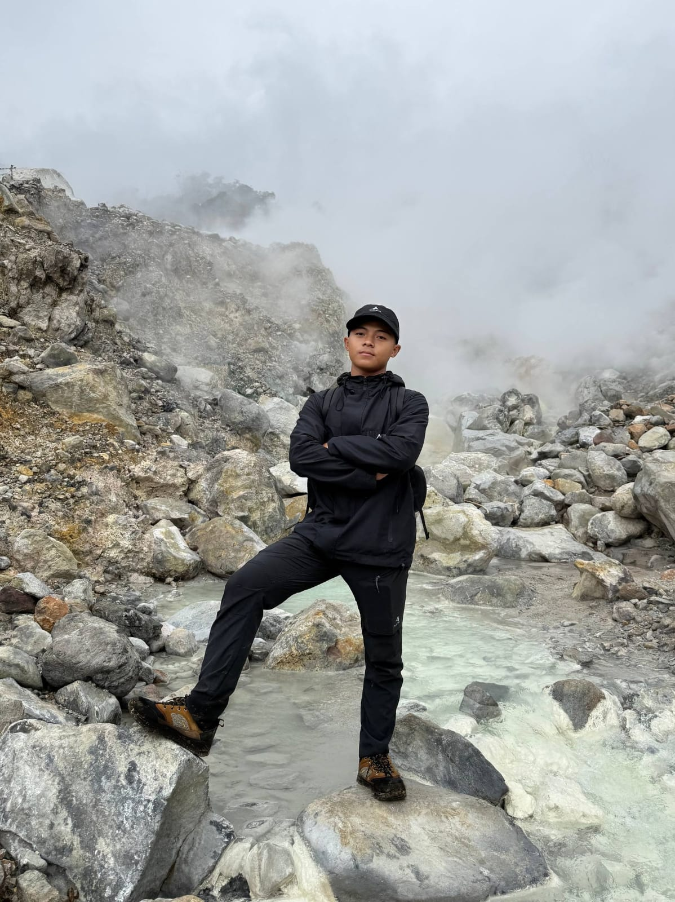

Halo, perkenalkan saya

Mahasiswa Teknik Informatika yang antusias dengan dunia pemrograman, matematika, dan kreativitas visual.
Saat ini saya sedang menempuh pendidikan di jurusan Teknik Informatika dan aktif mengajar sebagai tutor matematika. Saya senang memecahkan masalah lewat logika pemrograman sekaligus membuat hal-hal rumit menjadi mudah dipahami dan menarik secara visual.
Fokus Pemrograman
Tutor Matematika
Desain & Visual
Membangun logika algoritma menggunakan C++, serta dasar-dasar pengembangan web (HTML, CSS, JS).
Kalkulus, logika diskrit, serta menyusun metode belajar matematika yang interaktif.
Desain grafis, fotografi, videografi, dan pembuatan konten visual yang menarik.
Punya ide diskusi, proyek seru, atau sekadar ingin menyapa? Silakan hubungi saya melalui: